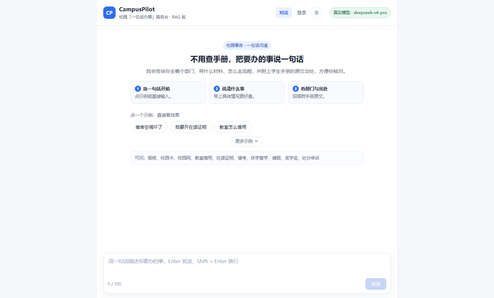
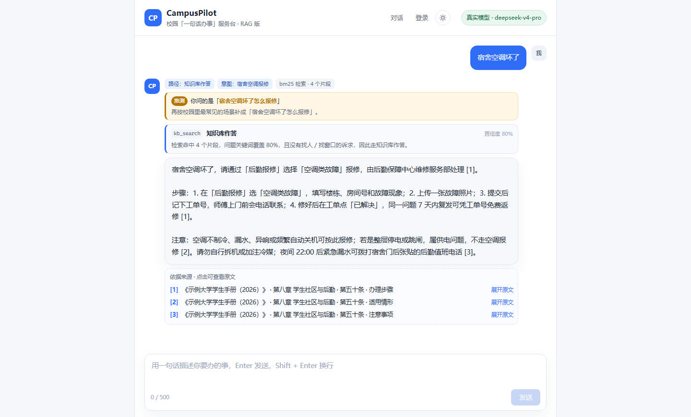
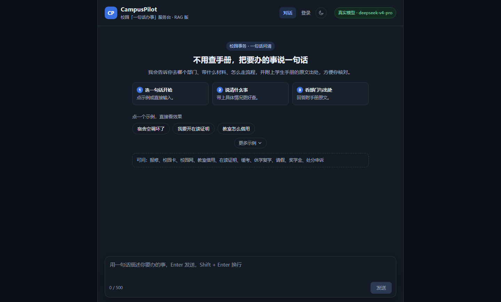
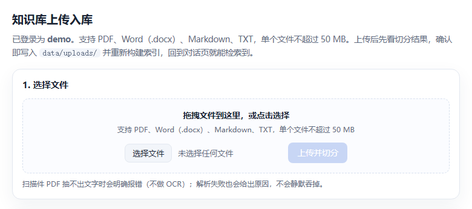
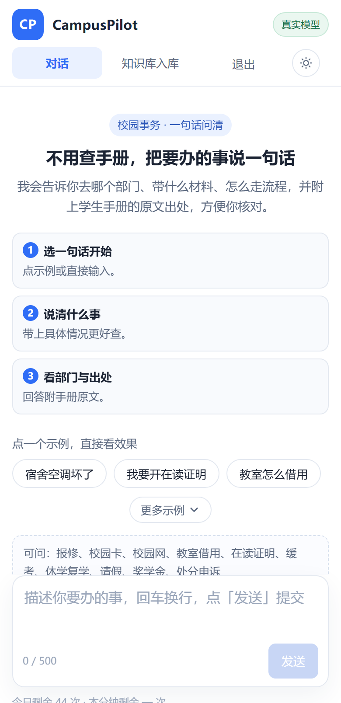
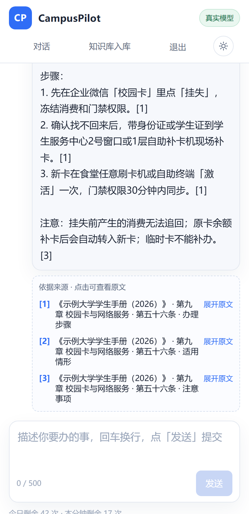

本文档按赛道「作品介绍文档」的 7 项要求逐条说明。完整的技术选型、架构、接口协议与实测数据见同目录下的 《CampusPilot 技术文档》（30 页，v1.12），本文不重复展开。
CampusPilot 解决的是校园里最常见的一类低效：学生不知道一件事归哪个部门管，只能在几十页学生手册里翻条款，或去群里打听。 系统把校内手册语料做成可检索的知识库，学生用日常口语说一句「宿舍空调坏了」「我要开在读证明」， 就能拿到归属部门、办理入口、办理步骤、所需材料、注意事项，并附上手册原文出处，点击即可核对。
http://47.96.20.128:8787，无需注册即可对话。首页给出三步引导与 3 条高频示例，点「更多示例」可展开全部 9 条。| 项目 | 说明 |
|---|---|
| 产品形态 | Vue 3 单页应用，桌面端与移动端共用一套页面；窄屏单列布局，支持亮 / 暗主题跟随系统。 |
| 技术栈 | Vue 3 + Vite + TypeScript；Node.js + Express + TypeScript；SSE 流式传输；BM25（可选向量混合）检索。 |
| 示例语料 | 11 篇手册体例文档、33 个片段、3575 字，覆盖报修、校园卡、校园网、教室借用、在读证明、成绩单打印、缓考补考、休学复学、请假、奖学金、违纪申诉。 |
| 三条路径 | kb_search（知识库作答）、refuse_out_of_scope（越界拒答）、handoff_human（转人工窗口）。 |
| 运行方式 | 单进程 Express 同时托管前端静态文件与 API，默认端口 8787；未配置模型 Key 时自动进入 mock 模式。 |
agent/planner.ts 在三个工具中结构化选择：语料内问题查知识库，
范围外问题固定拒答，找人 / 找窗口 / 投诉类诉求转人工并给出部门与窗口。路径、判定依据与置信度显示在回答上方，
拒答与转人工文案由服务端本地流式输出，不消耗模型额度。agent/interpreter.ts 把俗称、半句与常见错字归一化成校内标准问法
（如「空掉」→「宿舍空调坏了怎么报修」），并说明推测理由；「证明」这类可能有两个方向的问题，额外给出候选按钮
（如「其实就是成绩单」），点一下即按候选问法重问。[n] 标注；每条回答最多附 3 条引用，
办理步骤优先展示，引用卡片可展开手册原文并按提问关键词高亮。415 / 413 / 422 等明确错误码；入库需登录鉴权。config/school.json，
办事事项都在 data/ 下的 Markdown 里，不需要改代码。测试按「同一组问句、两种模式、逐项核对」执行：每条用例分别在 mock 与 live 下各跑一次，比对路径、引用条数、 SSE 事件字段与错误码，避免只验证其中一种模式。用例分为四类：语料内问法、口语 / 错字问法、范围外问题、求助型诉求。
| 测试问句 | 预期路径 | 实际结果 |
|---|---|---|
| 宿舍空调坏了 | 知识库作答 | 路径 kb，命中后勤保障中心，3 条引用 |
| 空掉 | 推测后知识库作答 | 归一化为「宿舍空调坏了怎么报修」，路径 kb |
| 证明 | 推测 + 候选 | 归一化为「在读证明怎么开」，候选「成绩单」可切换 |
| 投诉食堂找谁 | 转人工 | 路径 handoff，给出学生工作处与 3 号窗口 |
| 帮我写一段 Python 爬虫 | 越界拒答 | 路径 refuse，不调用模型 |
| 上传 51 MB 文件 | 413 | 前端提示超限，后端返回 413 FILE_TOO_LARGE |
除路径用例外，还核对了安全与成本边界：未登录调用 /api/kb/preview 返回 401；
超过 20 次/分钟返回 429 并带 Retry-After；草稿超过 15 分钟返回 410；
/api/health 返回 mode / model / retriever / corpus 四项运行状态。
线上环境实测 mode=live、model=deepseek-v4-pro、retriever=bm25，
语料规模与 /api/kb/docs 一致；SSE 的 meta / delta / done / error 四类事件均可按协议解析。
已知局限也如实记录：没有标注数据，意图置信度用「第一名与第二名文档的分差」估计，实测常见问法在 0.75–0.99， 措辞越偏离手册原文越低；扫描件 PDF 不做 OCR，抽不出文字时明确报错；示例语料为虚构，不代表任何真实学校的办事口径。
| 环节 | 技术实现 |
|---|---|
| 前端 | Vue 3 + Vite + TypeScript + vue-router，无 UI 框架；用 fetch 读取 ReadableStream 自行解析 SSE（EventSource 不支持 POST）。 |
| 后端 | Node.js + Express + TypeScript；单进程托管前端静态文件与 API，非 /api、非 /assets/、无扩展名的 GET 回退到 index.html，刷新深链接不 404。 |
| 检索 | 中文「单字 + 相邻双字」切词，英文数字按整词；BM25（K1=1.2、b=0.75），标题词频 ×3，双字命中加权 +0.15，topK=4；配置 embedding 后按 0.65 × BM25 + 0.35 × 余弦相似度混合，失败自动退回 BM25。 |
| 切分与入库 | 按 ## / ### 标题切块并保留章、条、小节出处；multer 内存接收单文件（≤ 50 MB），pdf-parse / mammoth 抽文本，确认后写入 data/uploads/ 并热重建索引。 |
| Agent | 提问归一化 → 检索 → 覆盖率与线索判定 → 三工具路径决策；覆盖率阈值 0.5，求助型诉求优先转人工，路由异常回退知识库。 |
| 安全与成本 | 输入过滤四类、固定窗口限流、每日请求与 token 双额度、10 分钟答案缓存（LRU 200）、登录 token 2 小时（最多 200 会话）。 |
以下截图均取自公网演示环境 http://47.96.20.128:8787，为无头 Chrome 实际渲染结果，未做界面示意或合成。






没有。CampusPilot 是本次参赛的新作，此前未在任何平台发表，也未参加过其他比赛或获得奖项。 仓库中的示例语料与界面文案均为本次为演示而编写。
不是。本项目从零自建，没有基于其他项目改造或二次开发，只使用了 Vue 3、Vite、Express、multer、pdf-parse、 mammoth 等公开开源依赖，并按其许可证使用。示例语料为虚构的「示例大学」手册，部门、电话、窗口与流程均为演示数据， 不取自任何真实校方文件，也不对应任何真实学校。